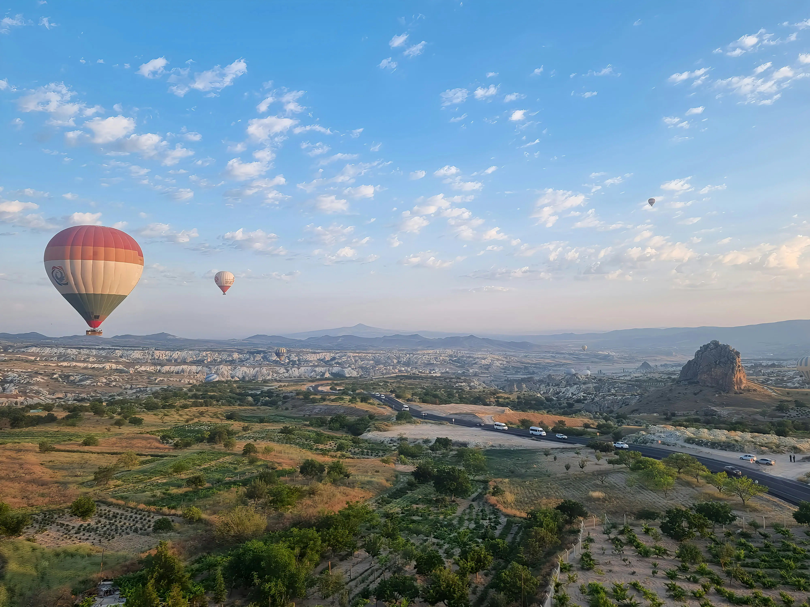
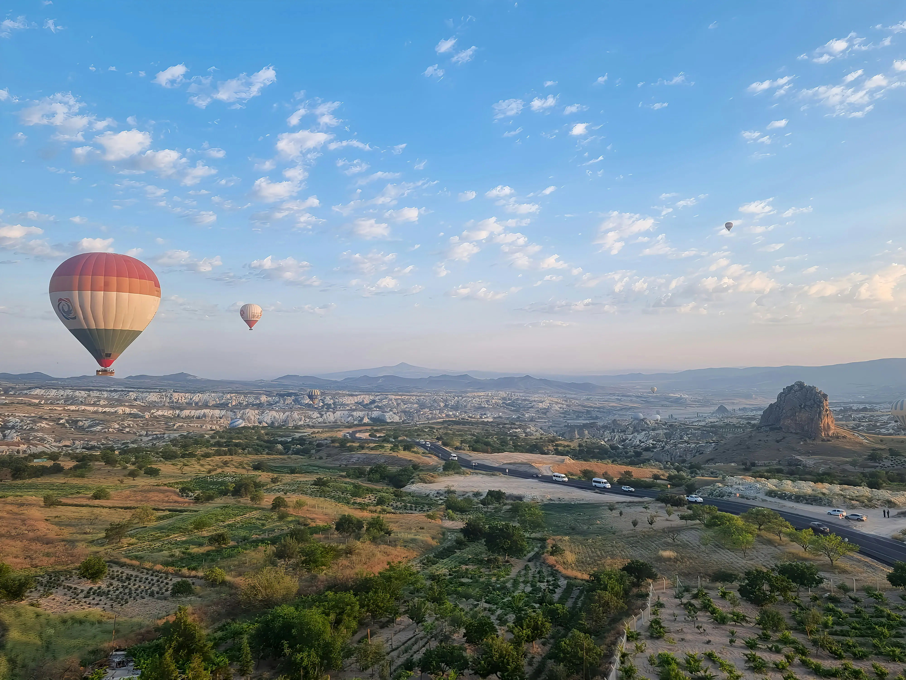

Turkey
🔊Now i will share with you my friends my visit to the beatiful country Turkey with its stunning natural scenery and their delicious and unique dishes.
Why visit Turkey?
Turkey is a country full of variety nature, history, and culture.
You can see snowy mountains ❄️, clear blue seas 🌊,green forests 🌳, and peaceful lakes all in one trip.
Its nature is stunning ☀️ especially in the north by the Black Sea and in Cappadocia’s unique rock formations.
Cities like Istanbul mix East and West beautifully, while Cappadocia offers breathtaking views.


What's the best time yo visit?
Spring March , May and autumn September ,November are the best times to visit because the weather is mild and the scenery is beautiful.


Top Attractions
- Hagia Sophia: A masterpiece that blends history and religion.
- Blue Mosque:One of the most beautiful mosques in the world with stunning design.


- Cappadocia: Breathtaking natural views and hot-air balloon rides over magical rock formations.
 

- Trabzon: Green mountains and mesmerizing waterfalls.


- Grand Bazaar Istanbul: A unique shopping experience full of color and culture.


Local food & culture:
- Kebab:
-
One of Turkey’s most famous dishes grilled meat cooked over charcoal, often served with rice, bread, and salad. Its special spices give it a rich, smoky flavor.

- Dolma:
-
Dolma means “stuffed vegetables†like grape leaves, peppers, or zucchini filled with seasoned rice and sometimes meat, cooked slowly in olive oil

- Baklava:
-
A very popular Turkish dessert made of thin pastry layers filled with nuts like pistachios or walnuts, then soaked in sweet syrup or honey.

- Turkish Tea:
-
A symbol of hospitality, served in small tulip-shaped glasses. It has a strong, dark flavor and is enjoyed throughout the day.

The culture is unique a blend of Eastern traditions and European influence, with people known for their warmth and hospitality.
.If you want to know more about a travels Click here
.here are some instructions
.If you have any questions contact me